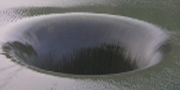
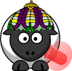
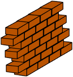

<table align="center" width="80%"><tr>
  <td><a target="_blank" href="http://www.adsea06-prevention.org"></a></td>
  <td><a target="_blank" href="http://www.ville-grasse.fr/article/articleview/32/1/51"></a></td>
  <td><a target="_blank" href="http://www.inria.fr/centre/sophia"></a></td>
</tr></table>
se sont associés pour proposer à un petit groupe de jeunes de Grasse de concevoir et créer ce jeu.

<hr/>

Contenus libres de droit (et gratuits) utilisés ici : <br/><br/> <ul>

  <li>Image à partir de laquelle le logo du site a été créé <a href="http://lilemangas.centerblog.net">«lilemangas»</a> : 
  <br/><table align="center"><tr><td><a href="./logo-source.png"></a></td></tr></table>

  <li>Séquence d'images pour l'explosion <a href="http://corigif.free.fr/explosion/explosion_01.htm">«corigif»</a> : 
  <br/><table align="center"><tr><td><a href="http://corigif.free.fr/explosion/img/explos_010.gif"></a></td></tr></table></li>

  <li>Image récupérée sur <a href="http://www.id2sorties.com">«id2sorties»</a> : 
  <br/><table align="center"><tr><td><a href="./trou-eau.png"></a></td></tr></table></li>

  <li>Images récupérées sur <a href="http://openclipart.org">«open clipart»</a> : <br/><table align="center" width="80%"><tr>
    <td></td>
    <td></td>
    <td></td>
    <td></td>
    <td></td>
    <td></td>
  </tr></table></li>

  <li>Polices de caractère téléchargées  sur : <a href="http://coolgrafik.com">«coolgrafik.com»</a> <i>LHF DEF artiste base</i>, <i>Searfont</i>.</li>

  <li>Le son du jeu a été importé de <a href="http://www.jamendo.com">«jamendo»</a> : <a href="http://www.jamendo.com/fr/track/242087/cancion-de-los-pajaros-cucus">"Los Angeles Ladrones" par l'artiste clbustos</a></li>

</ul>
